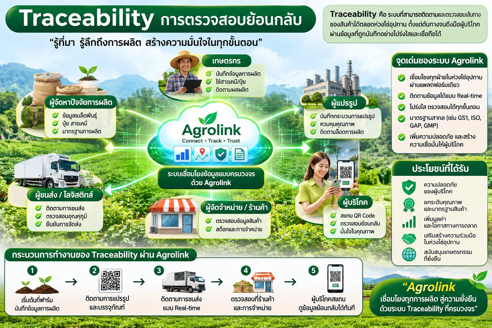

รายงานการศึกษา: แนวทางพัฒนาระบบ Digital Traceability สำหรับภาคเกษตรกรรม ปศุสัตว์ อุตสาหกรรมอาหาร และห่วงโซ่อุปทานของประเทศไทย

Traceability หรือการตรวจสอบย้อนกลับ คือระบบที่ทำให้ตรวจสอบและติดตามสินค้า วัตถุดิบ ผลผลิต หรือผลิตภัณฑ์ได้ตลอดห่วงโซ่อุปทาน ตั้งแต่ต้นทางจนถึงผู้บริโภค และตรวจสอบกลับจากปลายทางไปยังแหล่งผลิตได้
ตัวอย่างเช่น เมื่อผู้บริโภคซื้อนม UHT หนึ่งกล่อง ระบบควรตอบคำถามเหล่านี้ได้
หากพบปัญหาการปนเปื้อนหรือคุณภาพสินค้า ระบบต้องระบุได้อย่างรวดเร็วว่าสินค้าล็อตใดได้รับผลกระทบ และเรียกคืนเฉพาะส่วนที่มีความเสี่ยงได้
สำนักงานมาตรฐานสินค้าเกษตรและอาหารแห่งชาติ (มกอช.) อธิบายว่า Traceability ครอบคลุมตั้งแต่ระดับไร่นา การจัดการหลังเก็บเกี่ยว การแปรรูป และการจัดจำหน่ายจนถึงผู้บริโภค โดยมีทั้งการตรวจสอบย้อนกลับจากผลิตภัณฑ์และการติดตามจากแหล่งผลิตไปยังผลิตภัณฑ์
ประเด็นสำคัญสำหรับ AgroLink: Traceability ไม่ควรเป็นเพียงการแสดง QR Code บนผลิตภัณฑ์ แต่ควรเป็นโครงสร้างพื้นฐานข้อมูลดิจิทัลที่เชื่อมเกษตรกร สหกรณ์ ศูนย์รวบรวม โรงงาน ผู้ซื้อ ผู้ให้สินเชื่อ หน่วยงานภาครัฐ และผู้บริโภคเข้าด้วยกัน — AgroLink Digital Traceability Infrastructure
Traceability หมายถึงความสามารถในการติดตามและตรวจสอบประวัติ ที่มา และเส้นทางของสินค้า วัตถุดิบ หรือผลิตภัณฑ์ ตลอดกระบวนการผลิต การแปรรูป การขนส่ง และการจำหน่าย ประกอบด้วย 2 ทิศทางหลัก
ตรวจจากสินค้าปลายทางกลับไปต้นทาง เช่น สินค้าในห้างมีปัญหา → ตรวจเลข Lot → โรงงานที่ผลิต → วัตถุดิบที่ใช้ → ศูนย์รวบรวม → สหกรณ์ → ฟาร์มต้นทาง
ตรวจจากแหล่งผลิตไปปลายทาง เช่น พบน้ำนมจากฟาร์มหนึ่งมีสารตกค้าง → น้ำนมชุดนั้นถูกส่งไปที่ใด → โรงงานใดนำไปผลิต → สินค้าสำเร็จรูป Lot ใดได้รับผลกระทบ → จำหน่ายไปที่ใด
สหภาพยุโรปกำหนดหลักการนี้ไว้ใน Regulation (EC) No. 178/2002 มาตรา 18 ให้ระบุผู้ส่งมอบและผู้รับสินค้าของตนได้ และมีข้อมูลพร้อมให้หน่วยงานที่มีอำนาจตรวจสอบเมื่อร้องขอ
ระบบดิจิทัลระดับประเทศควรก้าวไกลกว่าขั้นต่ำนี้ โดยเชื่อมโยงข้อมูลได้ตลอดทั้งห่วงโซ่ ไม่ใช่เพียงขั้นก่อนหน้าและขั้นถัดไป
| ด้าน | ประโยชน์ |
|---|---|
| 1. Food Safety | ตรวจสอบความปลอดภัยอาหาร |
| 2. Quality Control | ควบคุมมาตรฐานและคุณภาพ |
| 3. Product Recall | เรียกคืนสินค้าได้ตรงจุด |
| 4. Transparency | สร้างความโปร่งใสในห่วงโซ่อุปทาน |
| 5. Market Access | รองรับมาตรฐานการส่งออก |
| 6. Financial Access | ใช้ข้อมูลประกอบการพิจารณาสินเชื่อ |
| 7. Sustainability | ตรวจสอบสิ่งแวดล้อมและ Carbon Footprint |
เมื่อเกิดการปนเปื้อน ระบบระบุแหล่งที่มาและขอบเขตของสินค้าที่มีความเสี่ยงได้
เก็บประวัติการผลิต เช่น พันธุ์พืชหรือพันธุ์สัตว์ แหล่งเมล็ดพันธุ์ ปุ๋ยและสารเคมี อาหารสัตว์ ยาสัตว์และวัคซีน วันเก็บเกี่ยว ผลตรวจคุณภาพ อุณหภูมิระหว่างขนส่ง และวิธีแปรรูป
จำกัดขอบเขตการเรียกคืนได้ เช่น พบวัตถุดิบจากฟาร์ม 3 แห่งมีปัญหา ระบบค้นหาทุก Lot ที่เกี่ยวข้อง แทนการเรียกคืนสินค้าทั้งหมดของโรงงาน
สร้างความน่าเชื่อถือให้สินค้า เช่น ข้าวอินทรีย์จากสหกรณ์ ทุเรียน GI กาแฟพิเศษ นมคุณภาพสูง เนื้อสุกรปลอดภัย ผลผลิตมาตรฐาน GAP และสินค้าเกษตรคาร์บอนต่ำ
ข้อมูลการเพาะปลูก ผลผลิต การส่งมอบ และการขายที่ตรวจสอบได้ ช่วยสนับสนุนการประเมินความเสี่ยงสินเชื่อ นี่คือจุดเชื่อมสำคัญกับ AgroLink Credit Scoring แต่ต้องแยกข้อมูลที่ใช้ประเมินเครดิตออกจากการรับรองความปลอดภัยสินค้าอย่างชัดเจน
ระบบที่ AgroLink พัฒนาควรอ้างอิงมาตรฐานที่ยอมรับในระดับสากล ไม่ควรออกแบบฐานข้อมูลเฉพาะกิจที่เชื่อมต่อกับระบบอื่นไม่ได้
GS1 เป็นองค์กรพัฒนามาตรฐานสากลสำหรับการระบุสินค้า สถานที่ และการแลกเปลี่ยนข้อมูลในห่วงโซ่อุปทาน GS1 Global Traceability Standard ให้แนวทางใช้มาตรฐานข้อมูลร่วมกับ Barcode, RFID และ EDI
| มาตรฐาน | หน้าที่ |
|---|---|
| GTIN | รหัสระบุสินค้า |
| GLN | รหัสระบุสถานที่หรือองค์กร |
| SSCC | รหัสระบุหน่วยขนส่ง |
| GS1-128 | บาร์โค้ดสำหรับข้อมูลโลจิสติกส์ |
| GS1 DataMatrix | บาร์โค้ดสองมิติ |
| GS1 QR Code / Digital Link | QR Code ที่รองรับข้อมูลมาตรฐาน |
| EPCIS | มาตรฐานแลกเปลี่ยนเหตุการณ์ในห่วงโซ่อุปทาน |
| CBV | คำศัพท์มาตรฐานสำหรับอธิบายเหตุการณ์ |
EPCIS (Electronic Product Code Information Services) เป็นมาตรฐานของ GS1 สำหรับบันทึกและแลกเปลี่ยนเหตุการณ์ที่เกิดกับสินค้าใน Supply Chain โดยบันทึกว่า What (เกิดอะไร), When (เมื่อใด), Where (ที่ไหน), Why (ด้วยกระบวนการใด) และ How (รายละเอียดหรือเงื่อนไขประกอบ)
EPCIS 2.0 รองรับข้อมูลเซนเซอร์ เช่น อุณหภูมิ ความชื้น และข้อมูล IoT จึงเหมาะกับระบบเกษตรและปศุสัตว์ที่ใช้ Sensor และ Gateway
มาตรฐานอาหารระหว่างประเทศที่จัดทำโดย FAO และ WHO เป็นกรอบอ้างอิงด้านความปลอดภัยอาหาร การจัดการความเสี่ยง และการตรวจสอบย้อนกลับในห่วงโซ่อาหาร
| มาตรฐาน | ขอบเขต |
|---|---|
| ISO 22000 | ระบบบริหารความปลอดภัยอาหาร |
| ISO 22005 | การตรวจสอบย้อนกลับในห่วงโซ่อาหารและอาหารสัตว์ |
| ISO 9001 | ระบบบริหารคุณภาพ |
| ISO 14001 | ระบบบริหารสิ่งแวดล้อม |
| ISO 14067 | Carbon Footprint of Products |
| ISO/IEC 27001 | ระบบบริหารความมั่นคงปลอดภัยสารสนเทศ |
กฎหมายหลักคือ Regulation (EC) No. 178/2002 โดยเฉพาะ Article 18 ซึ่งกำหนดให้
สหรัฐฯ กำหนด Food Traceability Rule สำหรับอาหารใน Food Traceability List (FTL) โดยมีข้อกำหนดสำคัญ ได้แก่ Critical Tracking Events (CTEs), Key Data Elements (KDEs), Traceability Lot Code และการส่งข้อมูลให้ FDA ภายใน 24 ชั่วโมงเมื่อร้องขอ (หรือตามระยะเวลาที่ FDA เห็นชอบ)
| หน่วยงาน | บทบาท |
|---|---|
| มกอช. | มาตรฐานสินค้าเกษตรและอาหาร |
| อย. | มาตรฐานและความปลอดภัยอาหาร |
| กรมปศุสัตว์ | มาตรฐานฟาร์มและผลิตภัณฑ์ปศุสัตว์ |
| กรมวิชาการเกษตร | มาตรฐานการผลิตพืชและสารตกค้าง |
| กรมประมง | มาตรฐานผลิตภัณฑ์ประมง |
| กรมส่งเสริมสหกรณ์ | สนับสนุนระบบสหกรณ์ |
| กรมส่งเสริมการเกษตร | สนับสนุนการผลิตและข้อมูลเกษตรกร |
มกอช. มีแนวทางการตรวจสอบย้อนกลับตั้งแต่ระดับไร่นาจนถึงผู้บริโภค อย. มีข้อกำหนด GMP สำหรับสถานที่ผลิตอาหาร และเอกสารตรวจประเมินโรงงานผลิตอาหารของกรมปศุสัตว์อ้างถึงข้อกำหนด Traceability ตาม EU Regulation 178/2002
รหัสเกษตรกรและฟาร์ม พิกัด GPS พื้นที่เพาะปลูก ชนิดและพันธุ์พืชหรือสัตว์ วันที่เริ่มผลิต ปัจจัยการผลิต ปุ๋ยและสารเคมี ยาและวัคซีน อาหารสัตว์ การจัดการน้ำ ผลผลิต และผลตรวจมาตรฐาน
รหัสศูนย์รวบรวมและสมาชิก วันเวลารับสินค้า ปริมาณ น้ำหนัก คุณภาพ ผลตรวจเบื้องต้น อุณหภูมิ เลข Lot และแหล่งที่มา
วัตถุดิบและ Lot วัตถุดิบที่รับเข้า วันเวลาแปรรูป เครื่องจักร สูตรการผลิต ผลตรวจคุณภาพ ผลผลิตสำเร็จรูป Lot ผลิตภัณฑ์ วันที่ผลิตและวันหมดอายุ
ผู้ขนส่ง ทะเบียนรถ คนขับ ต้นทางและปลายทาง เวลาออกและส่งมอบ อุณหภูมิระหว่างขนส่ง ตำแหน่ง GPS และสถานะสินค้า
ผู้ค้าส่ง ผู้ค้าปลีก โรงงานผู้ซื้อ ห้างสรรพสินค้า ร้านค้า ปริมาณจำหน่าย ราคาซื้อขาย วันที่รับสินค้า และ Lot ที่รับและจำหน่าย
เมื่อสแกน QR Code แสดงชื่อสินค้า แหล่งผลิต สหกรณ์ผู้ผลิต วันที่ผลิต มาตรฐานรับรองที่ตรวจสอบได้ ผลตรวจที่เปิดเผยได้ เส้นทางการผลิต และข้อมูลสิ่งแวดล้อมที่ผ่านการประเมิน
QR Code เป็นเพียงช่องทางเข้าถึงข้อมูล ไม่ใช่ตัวระบบ Traceability เอง
ระบุสินค้าและ Lot และเชื่อมไปยังข้อมูลต้นทาง ใช้ได้ทั้งเกษตรกร สหกรณ์ โรงงาน และผู้บริโภค
อ่านรหัสสินค้าและภาชนะด้วยคลื่นวิทยุโดยไม่ต้องสแกนด้วยกล้อง เหมาะกับคลังสินค้าและโลจิสติกส์
ตรวจวัดอุณหภูมิ ความชื้น ปริมาณน้ำนม ปริมาณน้ำ และสภาพแวดล้อมต่อเนื่อง
ระบุตำแหน่งฟาร์ม แปลง รถขนส่ง และจุดรวบรวม
ตรวจพื้นที่เพาะปลูก การเปลี่ยนแปลงของพืช และความเสี่ยงภัยพิบัติ เพื่อยืนยันกิจกรรมเกษตร
วิเคราะห์ความผิดปกติ ตรวจจับความเสี่ยง คาดการณ์ผลผลิต และตรวจความสอดคล้องของข้อมูลแต่ละขั้น
บันทึกหลักฐานและประวัติการเปลี่ยนแปลงที่ตรวจย้อนหลังได้ เหมาะเมื่อหลายองค์กรต้องการความน่าเชื่อถือร่วมกัน
| เทคโนโลยี | ความจำเป็น |
|---|---|
| QR Code / Barcode | จำเป็น |
| Database / Cloud | จำเป็น |
| API / Data Exchange | จำเป็น |
| Lot Management | จำเป็น |
| GPS | ตามลักษณะสินค้า |
| IoT | ตามลักษณะสินค้า |
| Satellite | เหมาะกับพืชเกษตร |
| AI | เพิ่มประสิทธิภาพ |
| Blockchain | ทางเลือก ไม่จำเป็นต้องมี |
AgroLink ควรเป็น Digital Infrastructure ที่เชื่อมข้อมูลจากทุกฝ่าย โดยแต่ละองค์กรยังใช้ระบบงานของตนเองได้ ไม่ต้องเปลี่ยนระบบเดิมทั้งหมด
| โมดูล | หน้าที่ |
|---|---|
| 1. Farmer Identity | ทะเบียนเกษตรกร |
| 2. Farm Registry | ทะเบียนฟาร์มและแปลง |
| 3. Input Registry | ทะเบียนปัจจัยการผลิต |
| 4. Production Records | บันทึกกิจกรรมการผลิต |
| 5. Harvest Management | จัดการเก็บเกี่ยว |
| 6. Collection Management | จัดการรวบรวม |
| 7. Lot Management | จัดการ Lot สินค้า |
| 8. Quality Management | ตรวจสอบคุณภาพ |
| 9. Processing Management | ติดตามกระบวนการแปรรูป |
| 10. Warehouse Management | คลังสินค้า |
| 11. Logistics Tracking | ติดตามขนส่ง |
| 12. Marketplace | ซื้อขายสินค้า |
| 13. QR Traceability | ตรวจสอบผ่าน QR |
| 14. Recall Management | จัดการเรียกคืนสินค้า |
| 15. Certification | จัดการใบรับรอง |
| 16. IoT Integration | รับข้อมูลเซนเซอร์ |
| 17. Satellite Integration | เชื่อมโยงข้อมูลดาวเทียม |
| 18. AI Analytics | วิเคราะห์ข้อมูล |
| 19. Audit Trail | ประวัติการเปลี่ยนแปลง |
| 20. API Gateway | เชื่อมโยงระบบภายนอก |
| รหัส | ตัวอย่าง |
|---|---|
| Farmer ID | TH-FRM-000001 |
| Farm ID | TH-FARM-000001 |
| Cooperative ID | TH-COOP-000001 |
| Collection ID | TH-COL-000001 |
| Factory ID | TH-FAC-000001 |
| Product ID | GTIN |
| Lot ID | LOT-20261128-001 |
| Shipment ID | SHP-20261128-001 |
| รายการ | ข้อมูล |
|---|---|
| Lot | RICE-001 |
| เกษตรกร A | 2,000 กก. |
| เกษตรกร B | 1,500 กก. |
| เกษตรกร C | 1,000 กก. |
| รวม | 4,500 กก. |
| สหกรณ์ | COOP-001 |
| วันรับซื้อ | 28 พ.ย. 2569 |
| ปลายทาง | โรงสี A |
ระบบต้องบันทึกความสัมพันธ์ระหว่างวัตถุดิบแต่ละรายกับ Lot รวม และเมื่อนำไปผสม แบ่ง หรือแปรรูป ต้องบันทึกความสัมพันธ์ระหว่าง Lot ต้นทางกับ Lot ปลายทางด้วย นี่คือหลัก Mass Balance และ Lot Genealogy ที่ช่วยให้ตรวจสอบย้อนกลับได้แม้มีการรวมและแบ่งสินค้า
ข้อมูลที่ต้องเก็บ: พันธุ์ข้าว พื้นที่ วันปลูก ปุ๋ย สารเคมี น้ำ วันเก็บเกี่ยว ความชื้น คุณภาพข้าวเปลือก การสี อัตราการได้ข้าวสาร และ Lot บรรจุ — โอกาส: ข้าวอินทรีย์ ข้าว GAP ข้าวคาร์บอนต่ำ และข้าวส่งออกที่ตรวจสอบแหล่งผลิตได้
ข้อมูลสำคัญ: พิกัดสวน รหัสเกษตรกร พันธุ์ วันตัด ความแก่ของผล ผลตรวจสารตกค้าง รหัสผู้ตัด รหัสโรงคัดบรรจุ ผลตรวจคุณภาพ และอุณหภูมิระหว่างขนส่ง
ข้อมูลสำคัญ: พื้นที่ พันธุ์ วันเก็บเกี่ยว น้ำหนัก ความชื้น เปอร์เซ็นต์แป้ง (มันสำปะหลัง) คุณภาพวัตถุดิบ แหล่งรับซื้อ และโรงงานปลายทาง
ข้อมูลสำคัญ: รหัสฟาร์ม เลขประจำตัวสัตว์หรือกลุ่มสัตว์ แหล่งลูกสุกร อาหารสัตว์ การใช้ยา วัคซีน วันเคลื่อนย้าย โรงฆ่าสัตว์ ผลตรวจเนื้อ และ Lot ผลิตภัณฑ์ — เชื่อมกับระบบกองทุนรักษาเสถียรภาพสุกรได้ แต่ต้องแยกข้อมูลการผลิตออกจากข้อมูลที่ใช้กำหนดสิทธิหรือการจ่ายเงินกองทุน
ข้อมูลสำคัญ: รหัสฟาร์มและเกษตรกร จำนวนโคนม ประวัติการรีด ปริมาณน้ำนมดิบ อุณหภูมิ ไขมัน โปรตีน SCC TBC สารปฏิชีวนะตกค้าง ปริมาณรับและส่งโรงงาน ปริมาณผลิต UHT Lot บรรจุ และวันหมดอายุ — เหมาะเป็นแกนกลางของ AgroLink National Dairy เพราะมีข้อมูลรับซื้อทุกวัน
สมมติผู้บริโภคสแกน QR Code บนนม UHT 200 มล. Product Lot: UHT-20261128-001 (ข้อมูลจำลอง)
เมื่อพบว่าน้ำนมจากฟาร์มหนึ่งมีสารตกค้าง ระบบจะค้นหา Lot น้ำนมที่เกี่ยวข้อง โรงงานที่รับไปแปรรูป และ Lot UHT ที่เกิดจากวัตถุดิบชุดนั้น เพื่อตรวจสอบและเรียกคืนได้ — Traceability ต้องเก็บความสัมพันธ์ของวัตถุดิบที่ผสมกันด้วย ไม่ใช่เพียงว่าโรงงานรับนมจากสหกรณ์ใด
ส่วนนี้สร้างความแตกต่างให้ AgroLink จากระบบ QR Traceability ทั่วไป ข้อมูลที่เกิดขึ้นจริงนำมาประกอบการประเมินความเสี่ยงได้
| ข้อมูล Traceability | ประโยชน์ด้านการเงิน |
|---|---|
| พื้นที่เพาะปลูก | ประเมินขนาดกิจกรรม |
| ข้อมูลดาวเทียม | ตรวจสอบกิจกรรมเพาะปลูก |
| ประวัติผลผลิต | ประเมินความสามารถในการผลิต |
| ประวัติส่งมอบ | ประเมินความสม่ำเสมอ |
| ประวัติการขาย | ประเมินรายได้ |
| คำสั่งซื้อ | ประเมินความต้องการตลาด |
| สัญญาซื้อขาย | ประเมินกระแสเงินสด |
| คุณภาพสินค้า | ประเมินโอกาสทางการตลาด |
ตัวอย่าง: เกษตรกรปลูกข้าว 20 ไร่ → ระบบตรวจพื้นที่ → บันทึกต้นทุน → ติดตามกิจกรรม → ประเมินผลผลิต → สหกรณ์รับซื้อ → บันทึกการส่งมอบและราคา → ข้อมูลเข้าสู่ Agri Credit Score → ธนาคารหรือสหกรณ์ผู้ให้กู้พิจารณาสินเชื่อ ผลคือการตัดสินใจมีหลักฐานประกอบ ลดการพึ่งพาเอกสารที่เกษตรกรจัดทำฝ่ายเดียว
| ระดับ | ความหมาย |
|---|---|
| Level 1 | ข้อมูลที่ผู้ใช้กรอกเอง |
| Level 2 | มีเอกสารหรือหลักฐานประกอบ |
| Level 3 | ผ่านการตรวจสอบโดยสหกรณ์หรือเจ้าหน้าที่ |
| Level 4 | มีข้อมูลจากอุปกรณ์อัตโนมัติหรือระบบที่ตรวจสอบได้ |
| Level 5 | ผ่านการตรวจประเมินหรือรับรองจากหน่วยงานที่มีอำนาจ |
ทะเบียนเกษตรกรและองค์กร ทะเบียนฟาร์มและสถานประกอบการ ระบบ Lot & Batch ระบบ QR Code ระบบบันทึกเหตุการณ์ API และ Data Exchange ระบบสิทธิและ Audit Trail
ทดลองใน 3 กลุ่ม: ข้าวและสหกรณ์การเกษตร · โคนมและศูนย์รวบรวมน้ำนม · สุกรและโรงงานแปรรูป เชื่อมฟาร์ม สหกรณ์ ศูนย์รวบรวม โรงงาน และผู้ซื้อ
ขยายไปสินค้าอื่น เชื่อมหน่วยงานภาครัฐและผู้ส่งออก พัฒนา Consumer QR และ Traceability Analytics เชื่อม Agri Credit Scoring และเตรียมรองรับมาตรฐานส่งออก
| ตัวชี้วัด | เป้าหมาย Pilot |
|---|---|
| องค์กรที่เข้าร่วม | 30 แห่ง |
| ฟาร์มที่ลงทะเบียน | 1,000 ฟาร์ม |
| ผลิตภัณฑ์ที่มี Lot | 100% ของสินค้านำร่อง |
| เหตุการณ์ที่บันทึกครบตามข้อกำหนด | ≥95% |
| การตรวจสอบย้อนกลับ | ภายใน 30 นาที |
| การทดสอบ Recall | ครบทุก Lot ที่จำลอง |
| ความถูกต้องของข้อมูล | ≥98% |
| รูปแบบรายได้ | ผู้จ่าย |
|---|---|
| SaaS Subscription | สหกรณ์ / โรงงาน |
| Farm Management Fee | ฟาร์ม / ผู้ประกอบการ |
| Traceability Service Fee | ผู้ผลิต / ผู้ส่งออก |
| QR Verification Fee | แบรนด์ / ผู้ประกอบการ |
| API Integration Fee | องค์กร / หน่วยงาน |
| IoT Monitoring Fee | ศูนย์รวบรวม / โรงงาน |
| Enterprise License | โรงงานขนาดใหญ่ |
| Data Analytics Service | ผู้ซื้อ / สถาบันการเงิน |
| Carbon MRV Service | ผู้ผลิต / ผู้พัฒนาโครงการคาร์บอน |
ไม่ควรเก็บค่าบริการจากเกษตรกรรายย่อยทุกขั้นตอนจนเป็นภาระ ควรให้สหกรณ์ โรงงาน ผู้ซื้อ และผู้ส่งออกเป็นลูกค้าหลัก
AgroLink ควรพัฒนา Traceability เป็นหนึ่งในโครงสร้างพื้นฐานหลักของแพลตฟอร์ม ด้วยเหตุผล 5 ประการ
ตรวจสอบย้อนกลับตลอดห่วงโซ่
ติดตามและวิเคราะห์กิจกรรมเกษตร
ข้อมูลประกอบการประเมินสินเชื่อ
ซื้อขายและเชื่อมโยงผู้ซื้อ
MRV, Carbon Footprint และการจัดการสิ่งแวดล้อม
Shared Data Infrastructure: Identity • Master Data • Transaction • Event • API • Audit
| ลำดับ | โครงการ | เหตุผล |
|---|---|---|
| 1 | AgroLink National Dairy Traceability | มีข้อมูลรับซื้อรายวันและจุดรวบรวมชัดเจน |
| 2 | AgroLink Rice Traceability | เชื่อมโยงสหกรณ์และเกษตรกรจำนวนมาก |
| 3 | AgroLink Swine Traceability | เชื่อมฟาร์ม โรงฆ่าสัตว์ โรงงาน และกองทุน |
| 4 | AgroLink Fruit Traceability | สนับสนุนตลาดส่งออก |
| 5 | AgroLink National Agricultural Traceability | ขยายเป็นโครงสร้างพื้นฐานระดับประเทศ |
ควรวาง Traceability เป็นแกนกลางร่วมของแพลตฟอร์ม ไม่แยกพัฒนาเป็นระบบ QR ของแต่ละสินค้า เพราะจะทำให้ข้อมูลซ้ำซ้อนและเชื่อมโยงในระดับประเทศไม่ได้
Traceability เปลี่ยนภาคเกษตรจากการผลิตและซื้อขายที่อาศัยเอกสารกระจัดกระจาย ไปสู่ Digital Supply Chain ที่ทุกฝ่ายตรวจสอบข้อมูลและทำธุรกรรมร่วมกันได้ โอกาสของ AgroLink จึงไม่ได้อยู่ที่การขาย QR Code หรือซอฟต์แวร์เท่านั้น แต่อยู่ที่การเป็นโครงสร้างพื้นฐานข้อมูลที่เชื่อมเกษตรกร สหกรณ์ โรงงาน ผู้ซื้อ ผู้ให้สินเชื่อ และหน่วยงานภาครัฐ
AgroLink ควรเป็นระบบกลางที่ทำให้สินค้าเกษตรทุกชนิดตรวจสอบได้ว่า ผลิตจากที่ไหน ใครเป็นผู้ผลิต ผ่านกระบวนการอะไร มีคุณภาพอย่างไร และถูกส่งไปยังใคร โดยทุกขั้นตอนเชื่อมโยงและตรวจสอบได้ตามมาตรฐานสากล
แนะนำให้ใช้ National Dairy Traceability เป็นโครงการนำร่องแรก แล้วนำโครงสร้างข้อมูลเดียวกันไปขยายสู่ข้าว สุกร ทุเรียน มันสำปะหลัง และสินค้าอื่น เพื่อสร้างระบบกลางที่ใช้ร่วมกันได้จริง แทนการสร้างแพลตฟอร์มแยกหลายระบบ
สิ่งที่เปิดใช้งานแล้วบนแพลตฟอร์ม: รหัสล็อตและ QR บนบรรจุภัณฑ์ ใบรับรองแหล่งที่มาที่ตรวจสอบได้ และการตรวจย้อนกลับของสหกรณ์